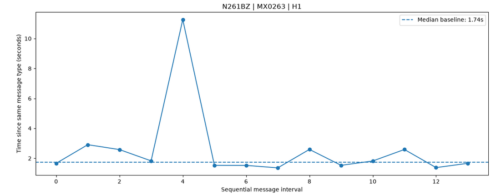
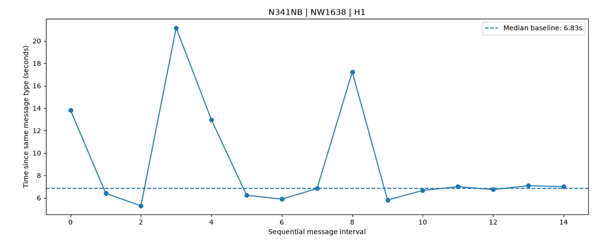
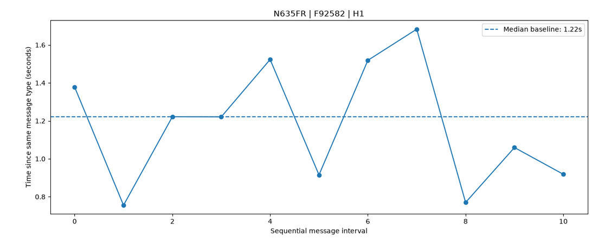

ACARS Detection Engineering: When the Signal Is Not the Message
Testing whether ACARS timing can provide a useful anomaly signal
ACARS timing can look interesting before you even look at the message content, but:
Can timing between ACARS records provide a useful anomaly signal on its own?
I worked with publicly available decoded VDL2/ACARS data and built a timing-based baseline using robust statistics. The project started as a fairly straightforward anomaly-scoring exercise, but the more I tested it, the more the real problem shifted toward methodology: what should the baseline be, are the scores actually using that baseline, and what does one decoded record represent in the first place?
1: Starting with the Timing Signal
The first version measured the elapsed time since the previous decoded record for the same aircraft.
The idea was to establish a normal timing pattern for an aircraft, then look for intervals that sit far away from it.
I used the median interval as the baseline and Median Absolute Deviation (MAD) as a measure of spread. Compared with mean and standard deviation, this makes the baseline less sensitive to a small number of very large gaps.
At first, the numbers looked interesting.
Then I looked more closely at how the baseline was being grouped.
2: Different Messages Have Different Cadences
The first baseline was calculated at the aircraft level. That meant different ACARS labels were being combined into the same timing distribution.
That is a problem because different message types can have very different natural cadences. A long interval for one label may be completely normal while looking extreme against the cadence of another.
I changed the feature so that an interval was only compared with records from the same aircraft registration, flight, and ACARS label.
That gave each stream its own local timing baseline.
3: Rebuilding the Baseline
With the grouping corrected, I recalculated the median interval and MAD for each stream.
The scoring formula itself did not need to change. The important part was making sure the population used to calculate the baseline matched the behavior being measured, which is an easy detail to overlook in detection work. The statistics can be perfectly valid while the grouping underneath them is wrong.
4: The Score Was Still Using the Old Baseline
There was another problem after the methodology was corrected.
The downstream scoring code was still referencing the original registration-level baseline columns. The same-label baseline had been calculated, but the final deviation and MAD calculations were not consistently using it. In practice, the numerator had been updated while the denominator was still coming from the older baseline.
Then I reassigned the canonical baseline columns to the corrected group-level values and rebuilt the downstream scores.
The difference is visible in the results:
| Stream | Max MAD score (before) | Max MAD score (after) | Extreme deviations (before → after) |
|---|---|---|---|
| N261BZ / MX0263 / H1 | 32.77 | 32.77 | 1 → 1 |
| N341NB / NW1638 / H1 | 21.25 | 23.99 | 3 → 4 |
| N635FR / F92582 / H1 | 1.54 | 1.54 | 0 → 0 |

N261BZ / MX0263 / H1
N341NB / NW1638 / H1
N635FR / F92582 / H1N341NB is the important comparison here. It was the only stream in this sample containing multiple message types, so its naive and corrected baselines were different. The other streams had the same effective baseline under both approaches, which is why their scores did not move.
5: The Deeper Finding: What Exactly Is a "Message"?
Once the scoring pipeline was internally consistent, I started looking at the protocol structure behind the records.
The dataset includes fields such as msgNum and blockId. Those expose structure below the level of a simple decoded record.
For these three streams, the difference is significant:
| Stream | Raw records | Unique msgNum |
Span |
|---|---|---|---|
| N261BZ / MX0263 | 15 | 2 | 36.25 s |
| N341NB / NW1638 | 18 | 18 | 142.08 s |
| N635FR / F92582 | 14 | 4 | 36.42 s |
As we can see, N341NB has 18 decoded records and 18 unique message numbers. N261BZ has 15 decoded records but only 2 unique message numbers. N635FR has 14 records but only 4 unique message numbers.
So a decoded record cannot automatically be treated as an independent logical ACARS message.
That changes how the timing feature should be interpreted. For example, the large N261BZ deviation occurs in a stream where many decoded records belong to only a small number of message numbers. Without reconstructing that underlying message structure, I cannot treat the deviation as a distinct logical-message timing event.
6: Why This Matters for Detection
A timing score can be mathematically correct and still be measuring the wrong thing. This became the main methodological finding of the project.
And the current implementation measures timing between decoded records and does not yet reconstruct logical ACARS messages consistently, so the resulting scores should be treated as exploratory timing signals rather than evidence of malicious activity or anomalous aircraft behavior.
Before using timing as a behavioral detection feature, the next step is to reconstruct the logical messages using protocol-aware fields such as msgNum and blockId, then measure cadence at that level.
Conclusion
The original question was whether timing alone could surface useful ACARS anomalies, and it can surface large deviations from a local baseline.
But during the investigation, the harder question turned out to be what exactly that timing represented.
The project exposed three separate issues: the original baseline mixed different message cadences, the first corrected scoring pass still referenced stale baseline columns, and the protocol structure showed that decoded records do not consistently correspond to independent logical messages.
The result is not a validated anomaly detector, but a timing-based exploratory feature that still needs protocol-aware message reconstruction before the signal can be interpreted as a behavioural one.
What I Learned
- A robust baseline is only useful when the grouping reflects the behaviour being measured. Median/MAD does not fix a population that was defined incorrectly.
- Updating a feature is not enough on its own. The downstream pipeline has to consume the corrected baseline too.
- Statistical validity and semantic validity are different things. A score can be internally consistent while still measuring the wrong unit.
- The most useful result was not a supposedly suspicious record. It was identifying why that result could not yet be trusted.
Full notebook & code: github.com/mxgmp/acars-detection-engineering